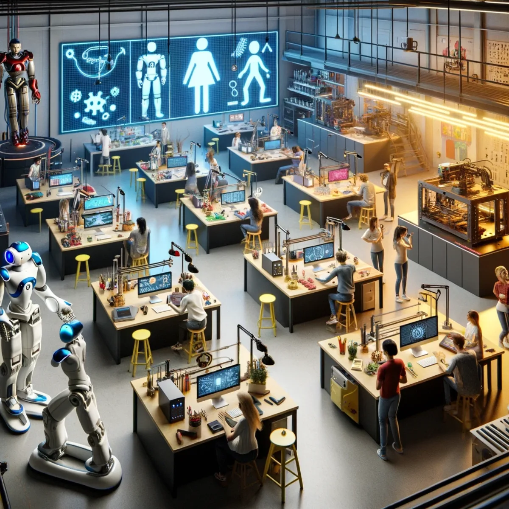
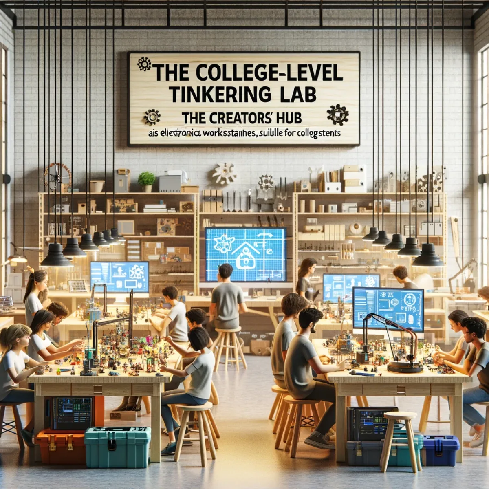
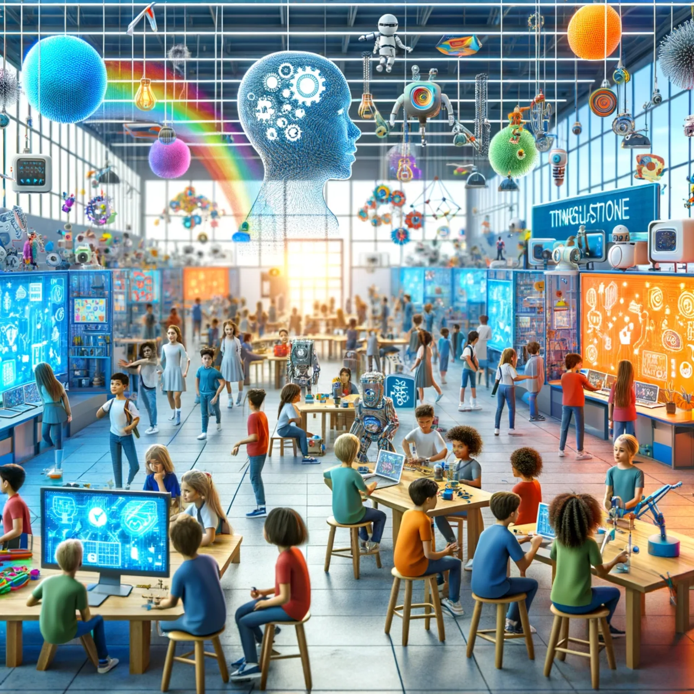
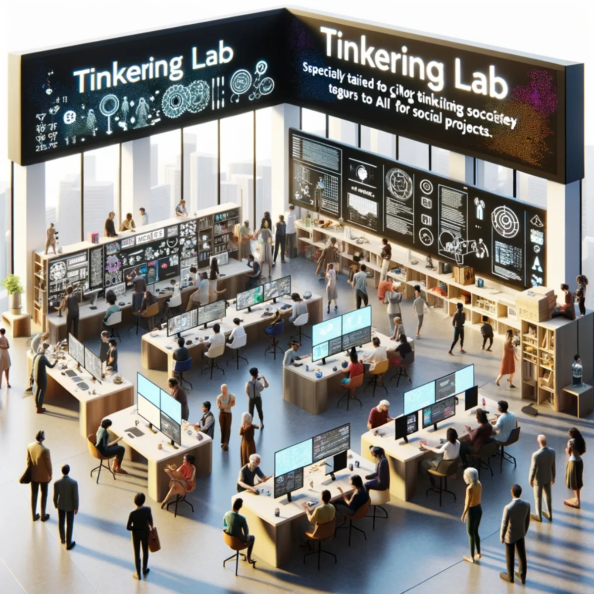

Pathways / Frontiers
Innovation Tinkering Labs
Multidisciplinary maker spaces for colleges, schools, and communities, where every learner becomes an innovator and every idea can spark change.

Blending art, science, and technology in every project
Advanced College-Level Tinkering Lab
Explore the Advanced Multidisciplinary Innovation Space, an advanced lab where art intersects with technology and science dances with design. For college students seeking to push boundaries, this lab can be kitted out to offer the ultimate platform to experiment across disciplines. Whether it's wearable tech, AI in art, sci-fi fashion or sustainable architecture, your multidisciplinary projects find their incubator here. Expand your academic horizons and innovate without limits: your multidisciplinary adventure starts as soon as you enquire about partnering with us to upgrade your college.
By integrating Aura of Intelligence technology, these labs transform conventional learning paradigms, offering hands-on experiences that transcend traditional boundaries. Here, every learner becomes an innovator, every idea has the potential to spark change, and collaboration is the cornerstone of progress.

Beyond the books: hands-on practical discovery
College-Level Tinkering Lab: The Creators' Hub
Welcome to The Creators' Hub, where college students transcend traditional learning to embrace hands-on innovation. This lab version is the crucible where fun and innovative concepts meet application, transforming ideas into tangible outcomes. Whether it's robotics, software development, smart fashion design or sustainability, our space can be equipped to fuel the creative fire of your students. Ignite your students' academic journeys with real-world problem-solving. Discover, design, develop: start your journey with us now by enquiring about partnering with us.
With state-of-the-art XR/AI tools at their fingertips, students are not just prepared for the future; they are encouraged to redefine it. Aura Innovation Labs don't just teach; they inspire, challenge, and empower. This is where the journey of discovery begins, where every student has the chance to leave an indelible mark on the world.

Igniting creative minds, one project at a time
School-Level Tinkering Lab: Young Inventors' Playground
Dive into the Young Inventors' Playground, where the boundless curiosity of youth meets the thrill of creation. This Tinkering Lab concept is a haven for young minds eager to explore the realms of science, technology, engineering, and maths. From simple robotics kits to renewable energy integration, students are empowered to dream big and build bigger. Invite us to join your school in nurturing the next generation of innovators. Let's turn curiosity into capability and together build a modern tinkering lab in your school today.
Aura Innovation Labs are more than just spaces; they are the birthplaces of tomorrow's pioneers. Let's unite in this transformative cause, fostering an environment where creativity flourishes and ideas soar. Be part of this exciting venture, where together we will ignite minds and shape futures. Reach out to us, and let's make this vision a reality.

Matrix of possibility: infinite configurations
Civil Society Tinkering Lab: Changemakers' Arena
Enter the Changemakers' Arena, where people with inquisitive minds and social entrepreneurs wield technology as their tool for change. This lab is more than a space; it's a movement where every project champions social cohesiveness, environmental stewardship, responsible enjoyment or civic engagement. Your vision for a better world has the perfect ally in our technology. Make your mark on society: show your interest in establishing our arena of change in your community now.
Join the movement: inspire, innovate, transform. Embark on this visionary journey with us. Together, we can sculpt a future where innovation knows no bounds, and every young mind is a beacon of change.
Keep exploring